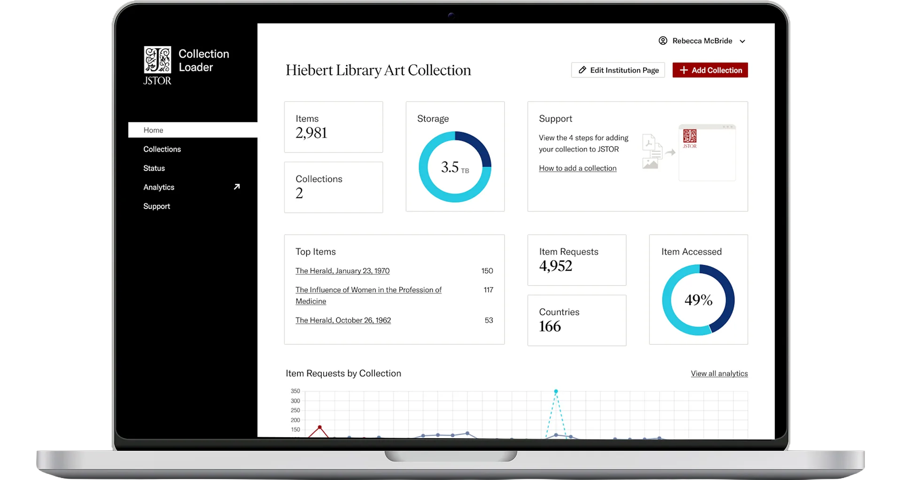

Summary
Directed the end-to-end creation and launch of a new automated migration tool — from initial concept to product rollout. 350+ institutions have utilized this tool to publish 100,000+ items, exceeding adoption goals by over 10%.
An automated migration tool that helped libraries and cultural institutions publish their digital collections at scale.

Directed the end-to-end creation and launch of a new automated migration tool — from initial concept to product rollout. 350+ institutions have utilized this tool to publish 100,000+ items, exceeding adoption goals by over 10%.
Create a simple and intuitive tool for libraries and cultural institutions to publish their digital collections for wider reach.
The core product team spent three full days together, focused on problem definition and solution ideation.
Tested low-fidelity concepts to encourage candid feedback and spontaneous suggestions.
Tested a working prototype to measure interest in adopting the tool and ease of use.
25 institutions participated in overview sessions and trialed the Collection Loader tool.
I created an initial concept for user validation by synthesizing sprint outputs — identifying key risks, focus areas, and design principles. This was done in close collaboration with the core product team (Product Manager, UX Researcher, four Engineers, and myself) and with input from experts including a Metadata Librarian and Data Governance Director.


The marketing email was crucial for testing. We needed to provide a realistic preview of the new product to gauge interest before committing to build.


To understand how potential users wanted to begin using the Collection Loader, we showed side-by-side options of two approaches. Would they prefer starting from the overall structure and themes, or focus instead on the media objects and metadata?
This comparative format sparked a valuable dialogue about the merits of each and gave us tangible insights into real user preferences.


Mapping metadata is arguably one of the most important steps in the publishing process. The system shows how it interprets metadata from the user and allows them to make corrections before publishing.

Another crucial step in the process is setting up how the collection will be presented to scholars. Here we explored what types of tools and context institutions would like to provide when a scholar visits their collection.

Twenty-five institutions participated in overview sessions, while fifteen trialed the Collection Loader tool. Despite — and because — the tool being in active development throughout this program, participants provided valuable insights that directly shaped product and development priorities.
"This process is amazing for us. I used to use CONTENTdm and would set it up to upload overnight. I could do the same — load it at the end of day. This works for us! Donors complain: Why isn't it up? And here I have control."
Megan, Southwestern University
350+ institutions have utilized the tool to publish over 100,000 items — exceeding adoption goals by more than 10%.
A story of how the Collection Loader integrates with and enhances our products and services — created to align internal stakeholders ahead of launch.